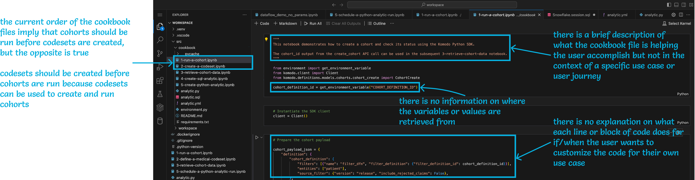
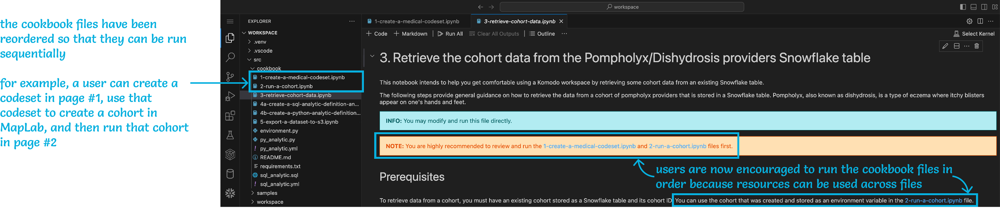
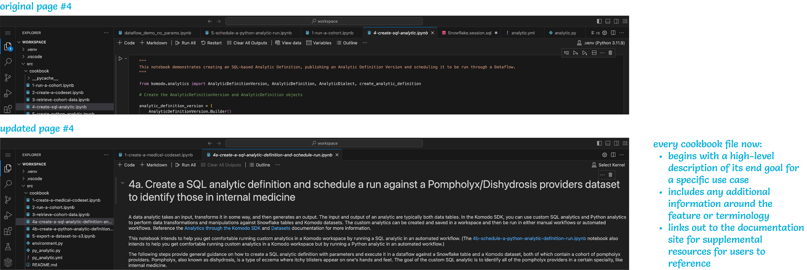
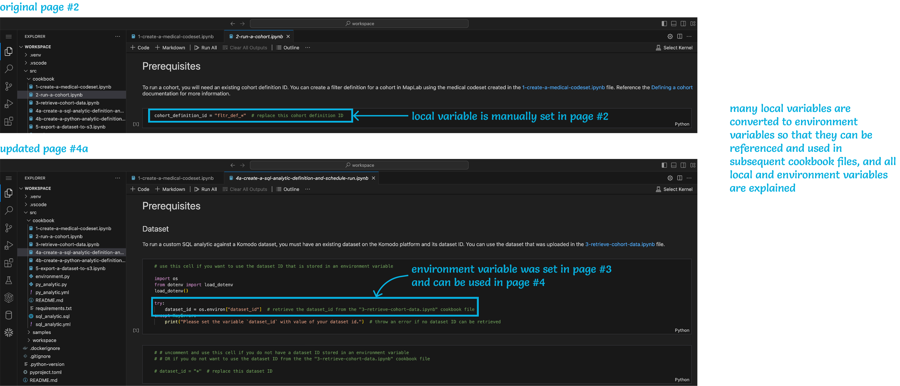
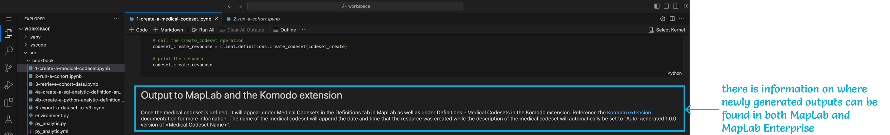

Technical Writer
September 2023 - March 2025
Astro + Starlight, GitHub, Jira, Jupyter Notebook, Markdown, Paligo, Python, Snagit, Visual Studio Code
As of March 2025, I have single-handedly written all of the documentation for the MapLab Enterprise offering. For some sample content, you may reference the following (locked) files:
Please note that the above files contain proprietary content for the related product and should only be used in correspondence with this portfolio for recruiting purposes. Company branding and several links in the content have therefore been intentionally removed. However, screenshots of the original documentation are linked in the files.
I spent most of my first two years in the Technical Writing (TW) team at Komodo Health (“Komodo”) supporting the traditional Mavens products, like Publications Planning and Care Connect. When my third year in the company approached and I realized I was getting pretty comfortable with the Salesforce products on the Mavens side, I expressed to my manager that I wanted to engage with the proprietary products on the Komodo side as well to tackle more complex developer documentation. I wanted to be sure that I was constantly exposing myself to new technologies, tools, and teams to further my career growth, and I knew that I was the only one responsible for proactively making that happen.
As a result of my request, I had the opportunity to float around a few teams and products before finally landing on the Developer Experience (DX) team. This was a brand new team in Komodo that consisted of:
They were responsible for implementing the high-code experience within the MapLab product suite that would later be sold as the “MapLab Enterprise” offering that contains:
I started out on the DX team as an observer, listening in on their meetings to get a sense of what exactly they were trying to build and why. I reviewed existing materials like proof-of-concept (POC) demo recordings and slide decks that compared the low-code and high-code offerings.
I increased my engagement in the DX team over time to eventually build out the documentation site for the product. I worked very closely with every member of the DX team to understand and document the different features and use cases of MapLab Enterprise so that customers could create and access their workspaces through the standard MapLab user interface (UI), call one or more API endpoints to extract data from the Healthcare Map, and then perform analyses on the data to generate some desired insights.
When MapLab Enterprise and its accompanying documentation site officially launched in December 2024, the DX team had grown to having:
Below, I explain at a high level how I worked with the DX team to build out the documentation support model for MapLab Enterprise, including writing all of the corresponding developer documentation for the Komodo SDK and Komodo Workspaces and publishing all of the API documentation generated by various teams throughout the organization. I describe in more detail the major challenges I faced throughout this process, how I informally became a quality assurance (QA) tester for the product, and how I ultimately improved the user experience (UX) for new customers of the product.
When I first joined the DX team, both the company and the team wanted to launch a “developer portal” as the documentation site for MapLab Enterprise. Every internal stakeholder had a slightly different vision for what the developer portal was supposed to encompass, but they all agreed on wanting:
While most of these requirements were criteria that the TW team and I could typically meet, the third requirement was new to us. This led to many conversations among the DX team members, me and the other TW team members, and even Paligo representatives about choosing the most appropriate documentation tool for the developer portal and manifested into one of the biggest challenges I faced during my time with the DX team.
Most of the software engineers in the DX team were very experienced and knowledgeable, so they also had very strong opinions and voices about many things. I struggled for a long time adjusting to their ways of communicating and learning not to take their feedback too personally.
Collaborating with the DX engineers was especially challenging for me when we had to decide on a documentation tool for the developer portal. I had already been using Paligo within the TW team for every other product that I was supporting, so I proposed using Paligo for MapLab Enterprise as well. The DX team, however, disapproved. They were concerned that Paligo would not be robust enough to surface the documentation for the ~200 API endpoints that they and other teams within the organization were generating. I briefly investigated this issue myself and even got on support calls with Paligo representatives, but Paligo and I were unable to devise a feasible solution that would change the DX engineers’ minds in the time that we were given. Additionally, the DX team appeared reluctant to further investigate this issue with us. As a result, even though the TW team and I were hesitant to use a different documentation tool and strategy just for the DX team, we decided to compromise given the present limitations of Paligo for MapLab Enterprise. We let the DX team make the final call, and they ultimately decided on using Astro with Starlight for the documentation site because they felt that Astro was a more customizable web framework for building out a developer portal. Upon their decision, the TW team and I asserted that we would subsequently only focus on writing content for them and would not be able to help develop any custom component or branding in Astro due to our own limited resources, to which the DX team agreed. I began adjusting some of my typical documentation workflows to adapt to the new tool, such as relearning Markdown and adopting the docs-as-code process, while the DX engineers began pulling in the ~200 API documentation. With all of the content being centralized in the DX team’s GitHub repository (“repo”), it wasn’t long before we finally had a documentation site up for internal stakeholders to reference.
| Documentation Tool | Pros | Cons |
|---|---|---|
|
×
|
|
|
|
×
×
|
|
|
After using Astro and Starlight for some time, though, the DX team and I decided to reevaluate our decision of choosing Astro over Paligo. In particular, we all realized that even though Astro was very robust and flexible, many features and customizations that we wanted required more engineering resources from the DX team than anticipated, such as time and effort to implement the company’s branding, audience tagging, and the sandbox environment for customers to call and test the API endpoints. Additionally, most of these features already either came out of the box in Paligo or have been implemented in Paligo by the TW team, and the sandbox environment was no longer a priority. With the limited number of engineers that the DX team had, reallocating resources to build out the documentation site over the Komodo SDK and Komodo Workspaces did not seem reasonable. Instead, finding a solution or workaround to surface the automated API documentation of the ~200 endpoints through Paligo seemed more feasible. As there was also now more trust between the DX team and the TW team, one senior engineer on the DX team and I were able to work extensively and collaboratively to implement a process that imported and published the automated API documentation alongside my manual developer documentation. Though the workaround was convoluted – because the API documentation files had to be formatted a certain way to be imported into Paligo, every import had to be uniquely identifiable within Paligo, and several links within the MapLab Enterprise documentation had to be updated every time there was a new import – I made sure to document the entire process within the TW team’s Confluence site to ensure that other TW team members and Komodo staff could support the workflow as needed. With this solution on hand, I was able to migrate all of the Astro content into Paligo and revert back to my original documentation process while the DX team was able to sunset the Astro documentation site and focus on the actual MapLab Enterprise product offering.
| Documentation Tool | Pros | Cons |
|---|---|---|
|
×
|
|
|
|
×
×
|
|
|
Another major challenge that I faced while working with the DX team was the lack of an actual product for me to use to truly understand what I was supposed to be writing about. For an extended period of time, I was only able to rely on demos that were all smoke and mirrors, and even when I finally did have a testing environment to play around with, I encountered many bugs and unexpected behaviors in the product that prevented me from completing user flows the way they were intended. Even though I knew this type of hurdle was not specific to the DX team or MapLab Enterprise and is typical of any 0→1 product, I still struggled to come to terms with my inability to be productive and deliver tangible results.
To help the DX team, which did not have a QA engineer for most of its initial development period and did not have time to implement robust testing protocols, I took it upon myself to become the first user and unofficial QA tester for MapLab Enterprise. Whenever one of the DX software engineers marked a ticket as complete, I would quickly go into the staging environment to try out the new feature. I constantly thought about different entry points, user flows, and edge cases for each feature, especially with regards to installing the Komodo SDK and authenticating into the Komodo platform, and logged many bug tickets for the DX team with specific steps and screenshots to reproduce or even workaround the issues. To ensure that I was not raising false alarms with the DX team, though, I always tried to replicate and troubleshoot any unexpected behaviors myself and see if the issues were due to a user error, a change that an API team had made without notifying the DX team, or an actual bug that the DX team introduced. Even when a QA engineer finally did join the DX team a few months before the launch of MapLab Enterprise, I continued to question the DX team on how and why certain things worked or didn’t work and supported the QA engineer in ramping up to the product.
Aside from having no QA engineer and no testing protocol, as mentioned in the Challenge #2: Smoke, Mirrors, and Bugs section above, the DX team also initially had no documentation process. This was partially due to the size of the DX team and the nature of their 0→1 product, again, but also largely due to a lack of understanding within the DX team about the importance of technical writing.
In the first year that I joined the DX team, the software engineers did not completely understand the type of support or value that I could provide to them through manually written content. They believed that most, if not all, documentation could be generated through automations and scripts based on their Jira tickets and GitHub PRs and did not particularly see the purpose of having a technical writer. I don’t think they realized at the time that said automations need to be built and tested and are heavily dependent on the amount of information provided in those tickets and PRs, and the DX team had no time to either implement the automations or add detailed descriptions to their user stories and commits. Additionally, each ticket and PR is a standalone artifact and there still needs to be something – or someone – to piece together all of the information into a coherent story for users to understand. This only became more evident to the DX team as time went on, as I produced more written deliverables for MapLab Enterprise, and as more trust was established overall between the DX team and my TW team.
Because there was no standardized documentation process in place, and as the DX team began to appreciate the value of technical writing more, I took the authority and autonomy to establish and dictate a documentation workflow myself. I took complete ownership over my own timeline and led the DX team accordingly so that they could focus primarily on software development. My workflow was typically as follows:
The fourth major challenge with working with the DX team was the general complexity of the MapLab Enterprise product offering, as it consisted of multiple moving components owned by different teams within the organization and was intended for technical users like data scientists who typically build large queries to analyze heavy datasets. MapLab Enterprise was especially hard for me and many members of the DX team to grasp because most of us had never interacted directly with the Healthcare Map, the APIs, or our customers prior and we did not completely understand all of the use cases of the high-code product. Every DX engineer had many calls with other teams in Komodo to better understand the existing APIs and our customers’ needs and therefore better understand the features they were responsible for building in MapLab Enterprise. However, this resulted in a somewhat siloed implementation of many of the components in MapLab Enterprise and further highlighted the information gaps within the DX team.
Since MapLab Enterprise was already complex for the people responsible for building the product, we knew that it was definitely going to be complex for the people trying to use the product as well. To simplify the onboarding process, the DX engineers and I tried to devise ways to ensure new users could quickly and easily ramp up to the product. The DX engineers started a cookbook in Komodo Workspaces that contained several Jupyter Notebook files with sample code to show users how to call an API endpoint or use a feature to jumpstart their data analyses while I wrote example scenarios with sample code in my documentation to do the same.
Even though both the DX engineers and I wanted to help our users quickly ramp up to using MapLab Enterprise, I quickly noticed several issues with our approach:
| # | Issue | Description |
|---|---|---|
| 1 | Duplicate, but not reusable, content | I was manually copying and pasting code snippets from the cookbook into Paligo to explain sample user flows, which resulted in duplicate code and content between the workspaces and the documentation site |
| 2 | Code without context | Users were not given much explanation on what specific lines of code did or where any of the generated data would surface or live |
| 3 | Disparate content | Users did not have an easy way to navigate between their workspaces and the documentation site, such as to learn more about what each API endpoint does |
| 4 | Lack of a coherent story | The cookbook files were sorted based on creation date, and the DX engineers themselves were unsure if the Jupyter Notebook files were meant to be run sequentially or how each Jupyter Notebook file was supposed to relate to one another |
| 5 | Inconsistent and unprofessional | The cookbook files did not have consistent or standardized formatting to feel like a polished product |

I took it upon myself to revamp the cookbook to better explain how the disparate components of MapLab Enterprise worked. I:
I then made improvements in my own workspace with Python, SQL, Markdown, and HTML. I:
I also removed the duplicate code snippets from my Paligo documentation and, instead, summarized and referenced the cookbook files as example use cases to encourage users to go directly into the cookbook.
Throughout this process, I asked many questions, raised any bugs I encountered while testing my own cookbook updates, and finally demoed my cookbook suggestions to the DX team.
Upon receiving positive feedback on my proposed changes, I obtained approval to commit and push my changes directly to the DX team’s codebase.
| # | Update | Examples |
|---|---|---|
| 1 | The cookbook files are sorted so that they can be run sequentially |

×
|
| 2 | The cookbook files have more context |

×
|
|

×
|
||
|

×
|
Supporting the DX team was probably one of the most difficult undertakings in my technical writing career thus far. I struggled for a long time trying to understand how to best communicate and collaborate with the DX engineers and kept taking a lot of their opinions and feedback personally. I also stressed myself a lot trying to make sure I was producing results that they would acknowledge and appreciate, especially because they didn’t completely understand the importance and value of having a technical writer from the start.
I think time naturally allowed greater trust to be established between the TW team and the DX team, particularly between me and the engineers. As I saw firsthand how much pressure they had from both internal leadership and external customers to build out this complex product, I also developed greater empathy for the DX engineers, which made me want to help them out more.
However, I believe that letting the DX engineers decide on the initial documentation tool for the developer portal also helped build out the camaraderie between the TW and DX teams because it showed the DX engineers that we were there not to fight or hinder them but to help and support them. Even though we did end up changing the final documentation platform, I don’t think the time spent using Astro instead of Paligo was any time wasted. Perfection is the enemy of good and progress, and we made the best decision with the information we had available at the time. If we didn’t quickly settle on a documentation tool that we truly believed could serve our needs, the DX engineers would have been distracted from coding while I would have been stalled on writing.
I want to also believe that I actively played a part in convincing the DX engineers the importance of technical writing. For every feature, I diligently compiled and connected all of the disparate pieces of information from Jira tickets, GitHub PRs, Confluence pages, Slack messages, and Zoom meetings into one coherent piece of documentation that told a complete story. Through the writing of manual documentation and the updating of the cookbook, I provided tangible artifacts that showcased the unique value of having a technical writer. Producing deliverables like these helped me get a greater sense of belonging and value within the DX team as well, which further enhanced my desire to support and help the DX team, too.
Thinking back, even though I struggled a lot during my time with the DX team, I was able to hold on because I truly – really – enjoy technical writing. I love the process of gathering and piecing together information, I love writing, and I love being able to simplify some complex piece of information so that more people can understand and take advantage of the information at hand. Even today, with the introduction of so many AI tools, much information is still disparate and still needs a human to piece together. Certain aspects of technical writing may change in this era of AI, but the art of technical writing is still here to stay, and I am here for it.